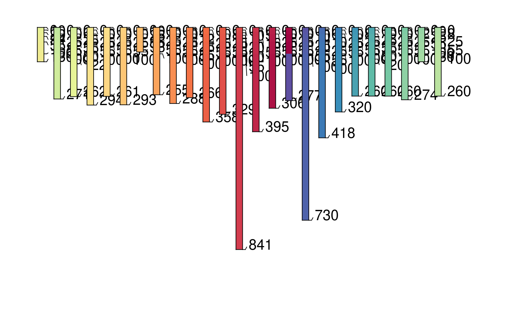
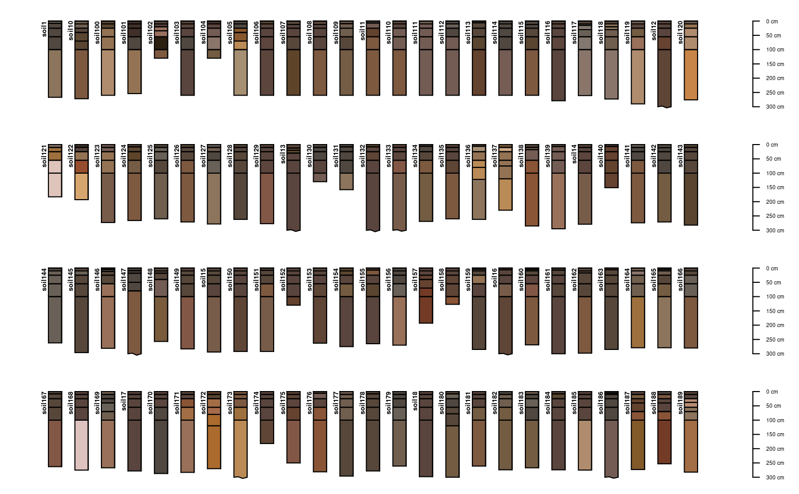
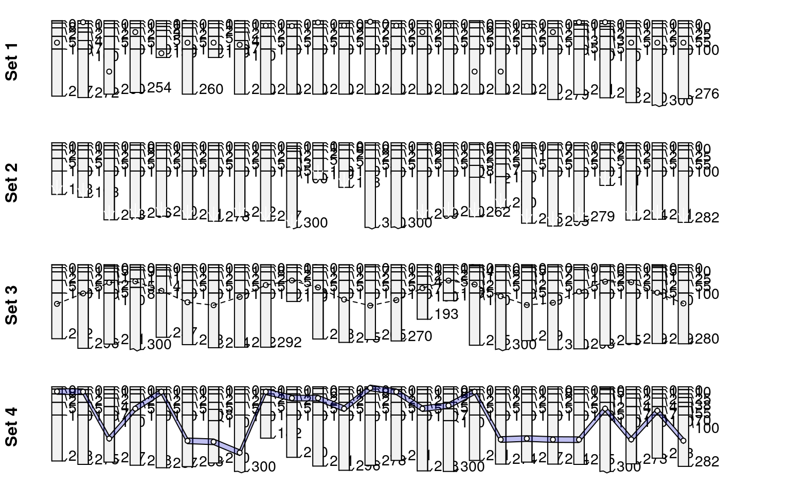

296 Soil Profiles from the La Rochelle region of France (F. Carre and Girard, 2002)
Formal class 'SoilProfileCollection' [package "aqp"]
with 6 slots ..@ idcol : chr "soil" ..@ depthcols: chr [1:2] "top" "bottom"
..@ metadata :'data.frame': 1 obs. of 1 variable: .. ..$ depth_units: chr
"cm" ..@ horizons :'data.frame': 1539 obs. of 17 variables: .. ..$ soil :
soil ID .. ..$ sand : sand .. ..$ silt : silt .. ..$ clay : clay .. ..$ R25
: RGB r-coordinate .. ..$ G25 : RGB g-coordinate .. ..$ B25 : RGB
b-coordinate .. ..$ pH : pH .. ..$ EC : EC .. ..$ CaCO3 : CaC03 content ..
..$ C : C content .. ..$ Ca : Ca .. ..$ Mg : Mg .. ..$ Na : Na .. ..$ top :
horizon top boundary (cm) .. ..$ bottom : horizon bottom boundary (cm) ..
..$ soil_color: soil color in r-friendly format ..@ site :'data.frame': 296
obs. of 1 variable: .. ..$ soil: chr [1:296] "soil1" "soil10" "soil100"
"soil101" ... ..@ sp :Formal class 'SpatialPoints' [package "sp"] with 3
slots .. .. ..@ coords : num [1, 1] 0 .. .. ..@ bbox : logi [1, 1] NA .. ..
..@ proj4string:Formal class 'CRS' [package "sp"] with 1 slots .. .. .. ..
..@ projargs: chr NA 296 Soil Profiles from the La Rochelle region of France (F. Carre and Girard, 2002). These data can be found on the OSACA project page (http://eusoils.jrc.ec.europa.eu/projects/OSACA/).
These data are c/o F. Carre (Florence.CARRE@ineris.fr).
F. Carre, M.C. Girard. 2002. Quantitative mapping of soil types based on regression kriging of taxonomic distances with landform and land cover attributes. Geoderma. 110: 241--263.
library(scales)
data(sp5)
par(mar=c(1,1,1,1))
# plot a random sampling of profiles
s <- sample(1:length(sp5), size=25)
plot(sp5[s, ], divide.hz=FALSE)

# plot the first 100 profiles, as 4 rows of 25, hard-coding the max depth
layout(matrix(c(1,2,3,4), ncol=1), height=c(0.25,0.25,0.25,0.25))
plot(sp5[1:25, ], max.depth=300)
plot(sp5[26:50, ], max.depth=300)
plot(sp5[51:75, ], max.depth=300)
plot(sp5[76:100, ], max.depth=300)

# 4x1 matrix of plotting areas
layout(matrix(c(1,2,3,4), ncol=1), height=c(0.25,0.25,0.25,0.25))
# plot profiles, with points added to the mid-points of randomly selected horizons
sub <- sp5[1:25, ]
plot(sub, max.depth=300) ; mtext('Set 1', 2, line=-0.5, font=2)
y.p <- profileApply(sub, function(x) {
s <- sample(1:nrow(x), 1)
h <- horizons(x); with(h[s,], (top+bottom)/2)
})
points(1:25, y.p, bg='white', pch=21)
# plot profiles, with arrows pointing to profile bottoms
sub <- sp5[26:50, ]
plot(sub, max.depth=300); mtext('Set 2', 2, line=-0.5, font=2)
y.a <- profileApply(sub, function(x) max(x))
arrows(1:25, y.a-50, 1:25, y.a, len=0.1, col='white')
# plot profiles, with points connected by lines: ideally reflecting some kind of measured data
sub <- sp5[51:75, ]
plot(sub, max.depth=300); mtext('Set 3', 2, line=-0.5, font=2)
y.p <- 20*(sin(1:25) + 2*cos(1:25) + 5)
points(1:25, y.p, bg='white', pch=21)
lines(1:25, y.p, lty=2)
# plot profiles, with polygons connecting horizons with max clay content (+/-) 10 cm
sub <- sp5[76:100, ]
y.clay.max <- profileApply(sub, function(x) {
i <- which.max(x$clay)
h <- horizons(x)
with(h[i, ], (top+bottom)/2)
} )
plot(sub, max.depth=300); mtext('Set 4', 2, line=-0.5, font=2)
polygon(c(1:25, 25:1), c(y.clay.max-10, rev(y.clay.max+10)),
border='black', col=rgb(0,0,0.8, alpha=0.25))
points(1:25, y.clay.max, pch=21, bg='white')

# close plot
dev.off()
#> null device
#> 1
# plotting parameters
yo <- 100 # y-offset
sf <- 0.65 # scaling factor
# plot profile sketches
par(mar=c(0,0,0,0))
plot(sp5[1:25, ], max.depth=300, y.offset=yo, scaling.factor=sf)
# optionally add describe plotting area above profiles with lines
# abline(h=c(0,90,100, (300*sf)+yo), lty=2)
# simulate an environmental variable associated with profiles (elevation, etc.)
r <- vector(mode='numeric', length=25)
r[1] <- -50 ; for(i in 2:25) {r[i] <- r[i-1] + rnorm(mean=-1, sd=25, n=1)}
# rescale
r <- rescale(r, to=c(80, 0))
# illustrate gradient with points/lines/arrows
lines(1:25, r)
points(1:25, r, pch=16)
arrows(1:25, r, 1:25, 95, len=0.1)
# add scale for simulated gradient
axis(2, at=pretty(0:80), labels=rev(pretty(0:80)), line=-1, cex.axis=0.75, las=2)
# depict a secondary environmental gradient with polygons (water table depth, etc.)
polygon(c(1:25, 25:1), c((100-r)+150, rep((300*sf)+yo, times=25)),
border='black', col=rgb(0,0,0.8, alpha=0.25))
##
# sample 25 profiles from the collection
s <- sp5[sample(1:length(sp5), size=25), ]
# compute pair-wise dissimilarity
d <- profile_compare(s, vars=c('R25','pH','clay','EC'), k=0,
replace_na=TRUE, add_soil_flag=TRUE, max_d=300)
#> Computing dissimilarity matrices from 25 profiles
#> [1.51 Mb]
# keep only the dissimilarity between profile 1 and all others
d.1 <- as.matrix(d)[1, ]
# rescale dissimilarities
d.1 <- rescale(d.1, to=c(80, 0))
# sort in ascending order
d.1.order <- rev(order(d.1))
# plotting parameters
yo <- 100 # y-offset
sf <- 0.65 # scaling factor
# plot sketches
par(mar=c(0,0,0,0))
plot(s, max.depth=300, y.offset=yo, scaling.factor=sf, plot.order=d.1.order)
# add dissimilarity values with lines/points
lines(1:25, d.1[d.1.order])
points(1:25, d.1[d.1.order], pch=16)
# link dissimilarity values with profile sketches via arrows
arrows(1:25, d.1[d.1.order], 1:25, 95, len=0.1)
# add an axis for the dissimilarity scale
axis(2, at=pretty(0:80), labels=rev(pretty(0:80)), line=-1, cex.axis=0.75, las=2)